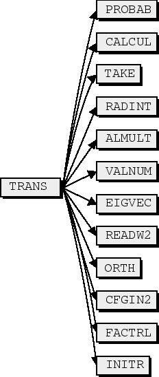
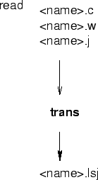

Next: ISO
Up: HFS
Previous: Input data
Contents
The input files are described in Chapter 14.15.
The output is written to a file <name>.h .
If a full print-out is requested, the program outputs the following data
from equations (46) and (47) for a pair of configurations  and
and  .
.


The values for which the matrix element has been calculated.
- Weight
The configuration weight .
- Coeff
The coefficient coef.
- Radial matrix elements
Values of the radial matrix elements
 and
and

- A(MHz), B(MHz)
The contribution in MHz to the different  and
and  factors
from this pair of configurations.
factors
from this pair of configurations.
2001-10-11